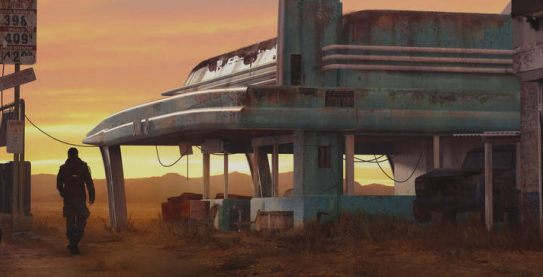

The Source

My name is Signal; an up-and-coming Media making a name for herself. I keep my ear to the ground and my finger on the pulse of our beautiful Night City, using my platform to protest and raise awareness of the evils Corporations commit at our expense.
That's not all, however. You'll also find some more lighthearted articles here for your enjoyment!
Past Broadcasts
Sentries, Smoke, and a Train Robbery 19/4/2075
Sentries, smoke and secret goods? A train robbery by yours truly!
This is a transcript of a previous broadcast
"Gooood evening Night City! My name is Signal, and welcome to INAC; a pirate broadcast containing all the coverage you need on everything anti corp, rising stars of the afterlife, and frontline POVS of ops carried out by yours truly!"
"Tonight's broadcast: a mysterious client desiring an even more mysterious crate being transported by train, hired a fixer to retrieve it."
"This fixer, impressed with our performance in the previous op, hired myself, the rocker, the med and the runner."
"We were to intercept the train at an abandoned rail yard where it was going to slow down slightly, retrieve the crate, and deliver it to our contact. The catch? The crate was guarded by a group of neo-nazis that i'm sure you know all too well, and the carriage containing the crate was guarded by a sentry."
"After some planning once we arrived at the rail yard (and talking down our rocker from endangering some nearby civilians. i know.) we decided to drop off a catwalk above the rails onto the train as it passed through. It was almost perfect, with the exception of our med and runner making a bit too much noise on the jump."
"working from the rear carriage, we breached a hatch on the roof and began our assault. The rocker threw a smoke grenade down into the carriage and lit the inside up with her assault rifle, jumping into the smoke."
"The rest of us followed quickly, tearing into the racists with a variety of ordinance and making quick work of them under cover of smoke. Once we made it into the second carriage, our runner was able to access the train's subnet and take control of the turret in the final carriage, proving her skills invaluable to the team."
"moving into the last carriage, we used the turret to rain fire from behind the remaining guards while our rocker and med combined their psychotic fervor into a frontal assault."
"after finishing off the remaining guards, we used the train controls to bring it to a halt and hauled the crate out to our driver"
"Sadly, a rather straightforward op this time, dear listeners. however, I and the other mercs are slowly making a name for ourselves in Night City."
"That's all we have for tonight my dear listeners! You can catch the vid of our Op on the INAC site, it should be uploaded right now!
"As always, This is Signal on the pulse of Night City, signing off. See you next time!"